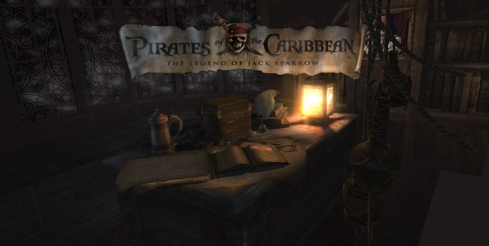
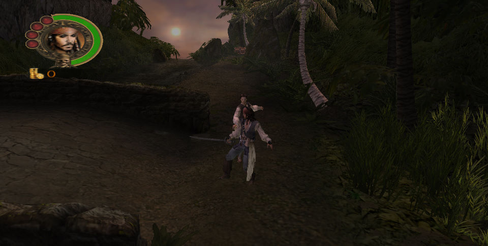

名稱：加勒比海盜／加勒比海海盜：傑克傳奇 (Pirates of the Caribbean: The Legend of Jack Sparrow，英文版) 簡介：7 Studios 2006年出品的動作冒險遊戲，由Bethesda Softworks代理發行 [待補]。

保護：無 備註：VirtualBox需搭配DxWnd（可全螢幕）。 操作： WSAD = 上下左右移動 ~ = 跑步 滑鼠／左右 = 左右旋轉視角 滑鼠左鍵／Pad2（下） = 輕攻擊／確認 Pad8（上） = 特殊輕攻擊／取消 滑鼠右鍵／Pad4（左） = 重攻擊 Space = 特殊重攻擊 Pad6（右） = 動作 F = 格檔 NumLock = 切換控制人物 Pad- = 變更人物為攻擊 Pad/ = 變更人物為防禦 Pad1 = 視角回正 Ctrl = 瞄準 Esc = 系統選單／暫停 Tab = 跳過過場動畫